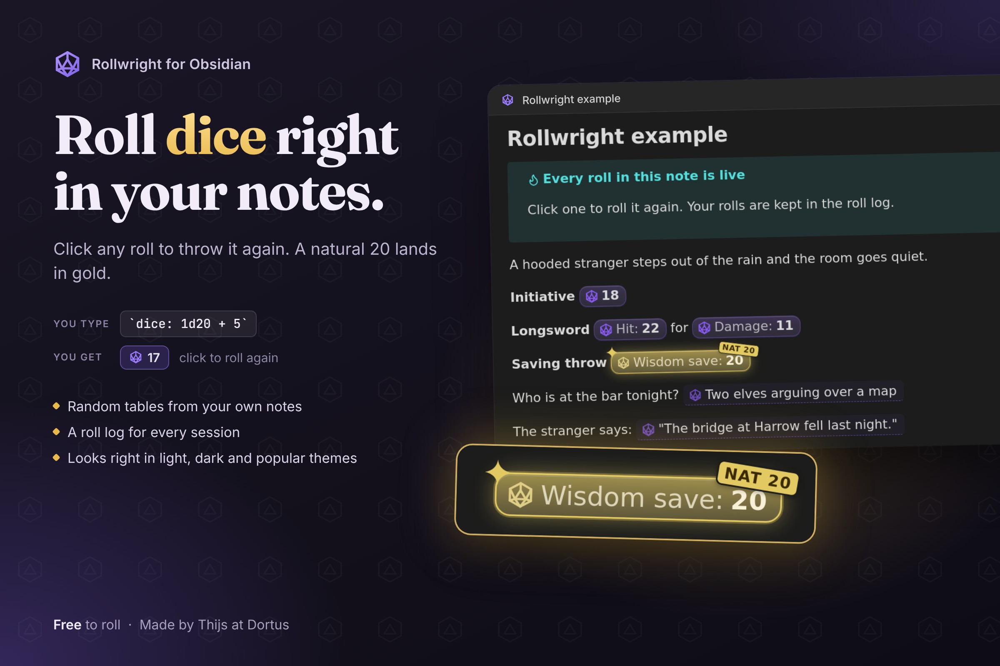
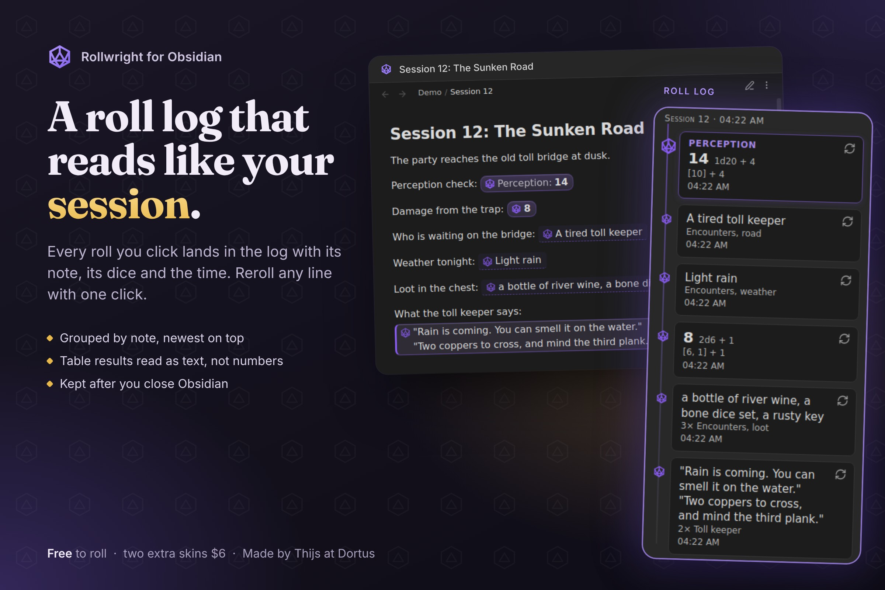
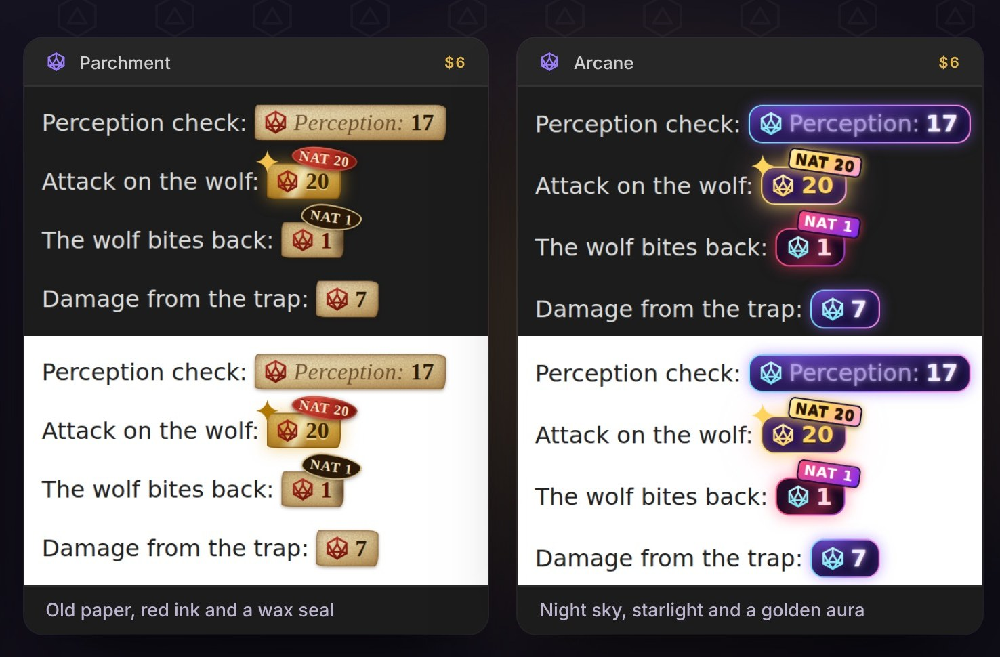

Rollwright · Obsidian plugin
Roll dice right in your notes.
Write `dice: 1d20 + 5`, read the result, click to roll again. A natural 20
lands in gold. Roll on your own tables, lists, sections and tags, and read your session
back in the Roll log. Made for game masters and solo players who keep their sessions in Obsidian.
Live in Obsidian's Community plugins. Version 0.3.3.
Every roll is a small game piece
Click a roll and it tumbles and lands in about half a second. The highest possible roll turns gold, with a NAT 20 stamp on a natural 20. The lowest turns red. Roll animations are off when your system asks for reduced motion.

What you can do
Rollwright uses the dice: notation known from the Dice Roller plugin,
so most notes you already have should keep working. All rolling is free. Every option is in the full reference.
- Roll dice in a sentence.
`dice: 1d20 + 4`becomes a result you can click to roll again. Keep highest, exploding dice, rerolls, success counting, Fudge dice and the narrative dice of Genesys and the Star Wars roleplaying games. - Roll on your own notes. A random row from a table, an item from a list, a block from a note, a line, or a note with a tag.
- Lookup tables. Put a formula in the first header and Rollwright picks the matching row. Cells can hold rolls too.
- Keep or write a result.
dice+:keeps a result after a restart,dice-mod:writes it into the note after you confirm. - Roll log. Every roll you click lands in a side panel with its note, its dice and the time, grouped by note and session. Reroll any line with one click. The log is kept after you close Obsidian.
- New to it? Open the empty Roll log and press Try it: create an example note: a tavern scene where every roll is live.
- Your numbers in your rolls. Save formulas by name, or use a number from the note's frontmatter: with
str: 3,`dice: 1d20 + str`adds 3. - Works where you write. Reading view and Live Preview look the same, in light and dark and popular themes.

Install
In Obsidian, open Settings, Community plugins, Browse, search for Rollwright,
press Install and then Enable. Or open it in Obsidian straight away, or see it on obsidian.md.
Then type `dice: 2d6 + 3` in any note, with the backticks, and move the cursor away.
Install by hand instead
- Download
main.js,manifest.jsonandstyles.cssfrom the latest release. - Put them in a folder
.obsidian/plugins/rollwright/inside your vault. - Restart Obsidian, open Settings, Community plugins, and turn on Rollwright.
- Price
- Free. Two skins $6, once
- Works on
- Obsidian desktop. Mobile not yet tested
- Account
- None needed
- License
- MIT, open source
Optional skins
Every rolling feature is free. Two extra skins, Parchment and Arcane, are an optional one-time purchase of $6 through Polar. Press Buy in the settings, pay, then paste the license key and press Activate. One key works on every device you use Obsidian on. The Classic skin is free and follows your theme.

Privacy
Rollwright has no telemetry and needs no account. It reads your notes to roll on them.
Your notes are only changed when you confirm a dice-mod: code, and then only
that code in that note, or when you ask for the example note, which it creates as a new note. Outside the vault it touches nothing.
Its only network connection is the license check for the paid skins, and only once you
use a license key. It then contacts api.polar.sh when you press Activate, and
after that at most once every 30 days. It sends your key, our organization id and our
benefit id, nothing else. Polar sees your IP address. The plugin keeps only the key and
the date of the last check. Read Polar's privacy policy.
Nothing is sent to Dortus.
Support
A question, an idea or a bug? Open an issue on GitHub or write to thijs@dortus.com.